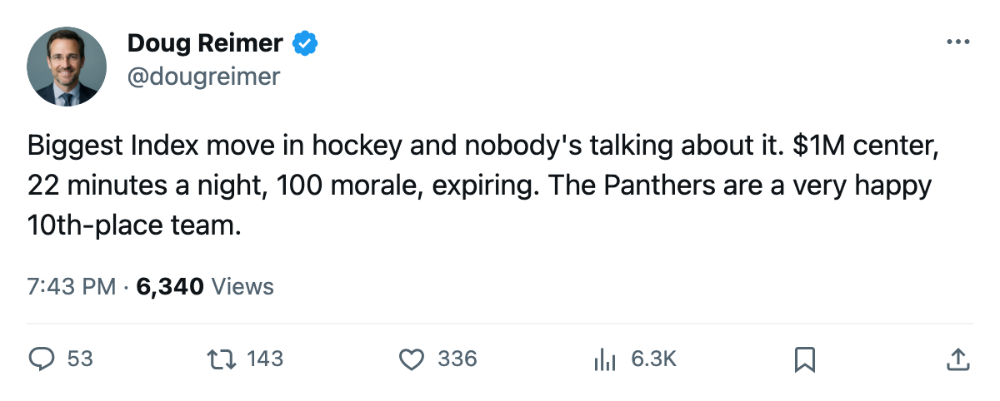
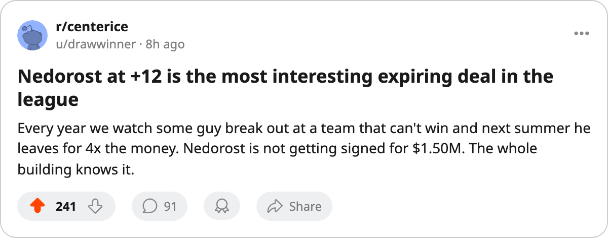

+12, $1.00M, 0 Years Left: The League's Biggest Riser Plays for the 10th-Place Panthers
Vaclav Nedorost has the largest Development Index move in hockey. His team has the 2nd-happiest room and the 10th-worst record in the East.
 Doug ReimerAnalytics editor, ex-video coach · The Slot Report
Doug ReimerAnalytics editor, ex-video coach · The Slot Report
 Vaclav Nedorost84 sits +12 on the Bureau's Development Index, the biggest single move in the league. His overall reads 80 against a base of 75. He has 9 points in 18 games for a team that has no player in the top 30 scorers.
Vaclav Nedorost84 sits +12 on the Bureau's Development Index, the biggest single move in the league. His overall reads 80 against a base of 75. He has 9 points in 18 games for a team that has no player in the top 30 scorers.
 Florida Panthers sit 10th in the East at 17 points through 18 games. Their payroll runs $57.33M, which divides to $3.37M a point. The club average on the Morale Scale is 97.7, tied with
Florida Panthers sit 10th in the East at 17 points through 18 games. Their payroll runs $57.33M, which divides to $3.37M a point. The club average on the Morale Scale is 97.7, tied with  Tampa Bay Lightning for first in the league.
Tampa Bay Lightning for first in the league.
The same club has the league's 14th-biggest faller:  Valeri Bure70, down 5 to 66 against a base of 80, with 0 points in 10 games on $2.90M. Up 12 and down 5 in the same room.
Valeri Bure70, down 5 to 66 against a base of 80, with 0 points in 10 games on $2.90M. Up 12 and down 5 in the same room.
The contract question
Nedorost's deal pays $1.00M and has 0 years left. He is 23, at 100 morale, and the Index has him producing at a level the Book's base did not predict. Last season he put up 25 points in 69 games at 13.4 minutes a night. This season he is at 22.4 minutes a night, 9 points in 18 games.
The coach has him at 22.4 minutes a night, which is trust. The +12 says the results are landing. The club has him locked at $1.00M with nothing left on the deal.
The Index produced a two-man table at Florida:
| Player | Pos | Age | GP | Pts | Index | Overall | Salary | Morale | Yrs left |
|---|---|---|---|---|---|---|---|---|---|
| Vaclav Nedorost | C | 23 | 18 | 9 | +12 | 80 | $1.00M | 100 | 0 |
| Valeri Bure | RW | 31 | 10 | 0 | -5 | 66 | $2.90M | 82 | 2+ |
Bure's contract does not appear in the contract-year class, which means he carries at least 2 more years. He earns $2.90M to Nedorost's $1.00M and has produced nothing this season. The Index has him at his lowest grade in the dataset.
What +12 costs
The Bureau's Book grades Nedorost on speed (99), passing (92), agility (91), puck handling (91), and shooting (91). His fighting grade is 50. His hero grade is 56. He is a skilled center with no physical game, graded potential 94.
Florida drafted him 14th overall in 2000, out of HC Ceske Budejovice. He came to the club in a July 2003 trade from Colorado that sent  Peter Worrell59 back the other way. Two seasons in, 25 points in 69 games last year, 9 in 18 this year at double the ice time.
Peter Worrell59 back the other way. Two seasons in, 25 points in 69 games last year, 9 in 18 this year at double the ice time.
The question for Florida's front office: what does an expiring $1.00M center with a 99 speed grade and a +12 Index look like in a buy-or-sell market? At his current rate of 9 points in 18 games, he is producing roughly half a point a night. The league's $1.00M men typically produce a fraction of that.
The team context
Florida's payroll buys $3.37M per point in the standings, the 16th-worst rate in the league. The injury ledger carries 15 spells across 81 days. Eleven of those 15 carry no designated body part. The four that do: a leg, an elbow, an abdomen, a neck.
 Olli Jokinen85 carries the top salary on the roster from the data I pulled ($7.63M). He is 13 games in with 19 points and an overall of 81 on the Book. He is the team's stated center. The Index does not list him, meaning his current form reads at his base. Nedorost plays the other center slot at $1.00M and 0 years left, and the Index has him 12 above his base.
Olli Jokinen85 carries the top salary on the roster from the data I pulled ($7.63M). He is 13 games in with 19 points and an overall of 81 on the Book. He is the team's stated center. The Index does not list him, meaning his current form reads at his base. Nedorost plays the other center slot at $1.00M and 0 years left, and the Index has him 12 above his base.

The happiness paradox
Florida's 97.7 club morale is tied for first in hockey. The Panthers have 15 injury spells and 17 points. They met  Atlanta Thrashers 3 times this season and sit at 2-2 in the series.
Atlanta Thrashers 3 times this season and sit at 2-2 in the series.
The Morale Scale tracks satisfaction, not wins. A 97.7 means the men in the room like their situation. Nedorost is at 100, which tracks: 22.4 minutes a night, the coach uses him, the results come. Bure is at 82, which also tracks: 10 games, zero points, a 14-point drop from his base.
Happiness does not produce 17 points, but it produces a room where a 23-year-old at $1.00M can skate 22.4 minutes a night and put up 9 points in 18 games. The Index calls that +12. The standings call it 10th in the East.

